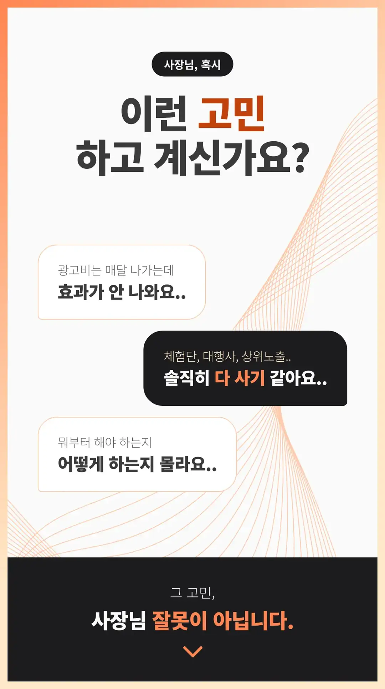


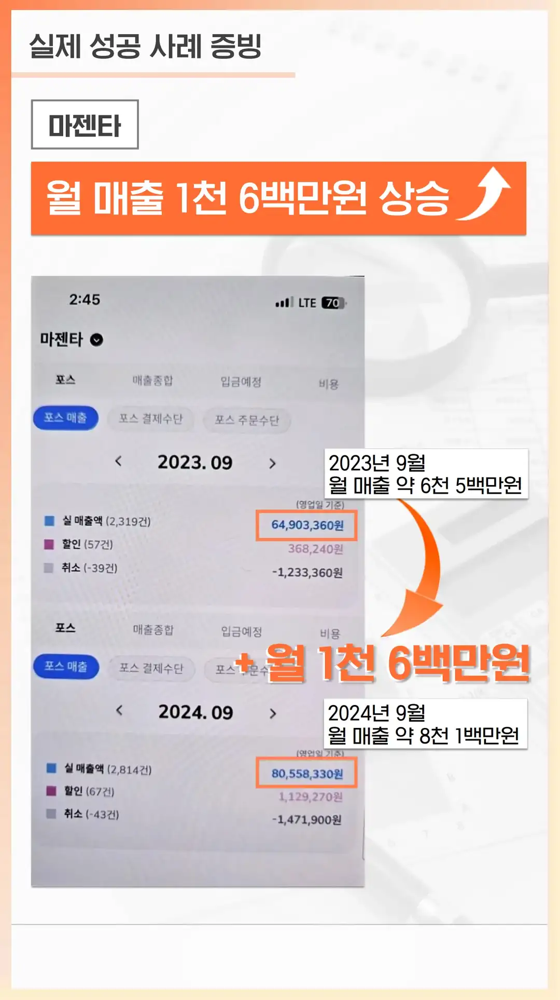
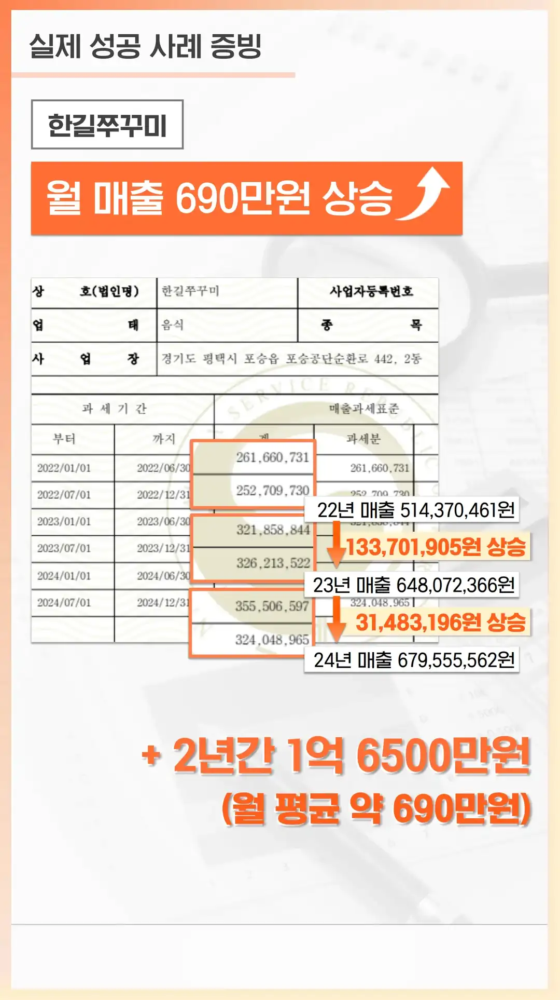
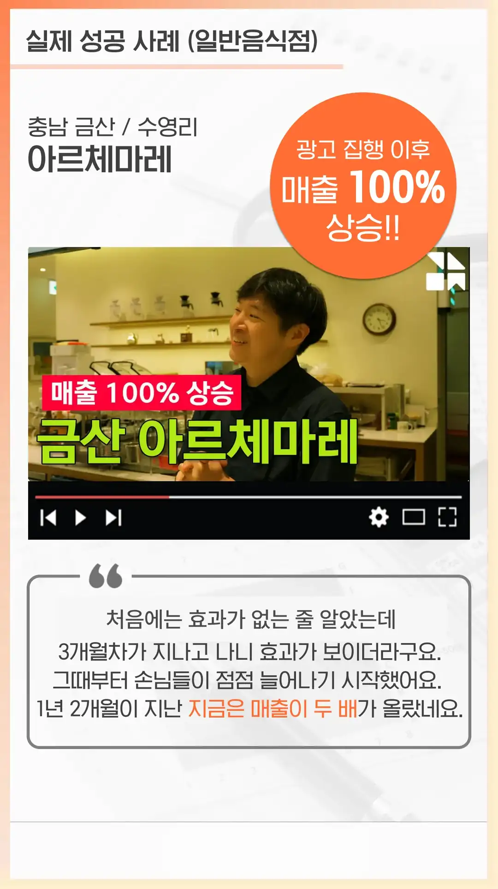
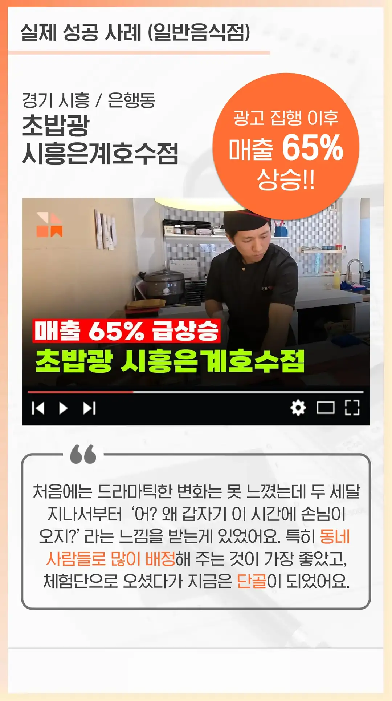

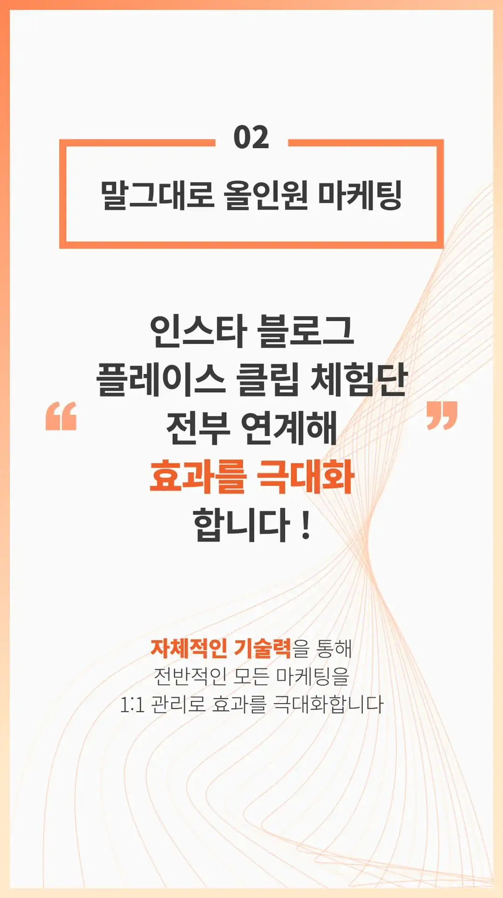
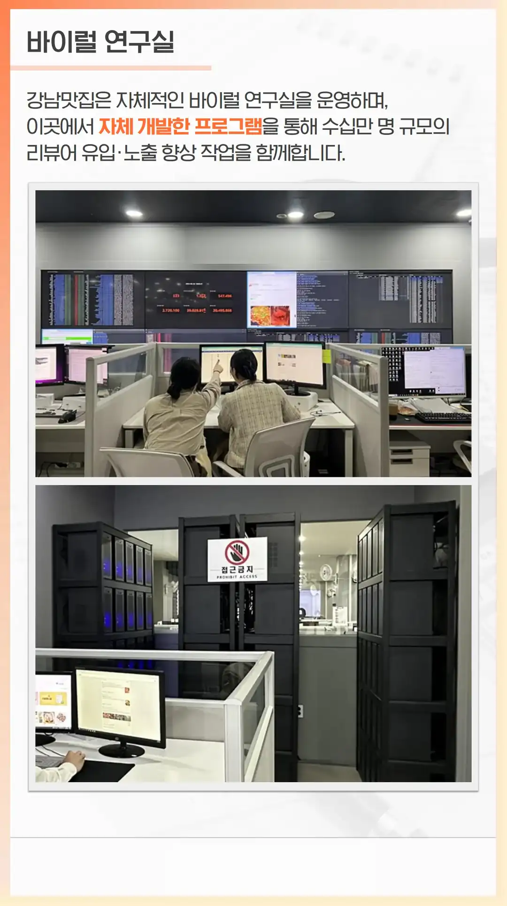

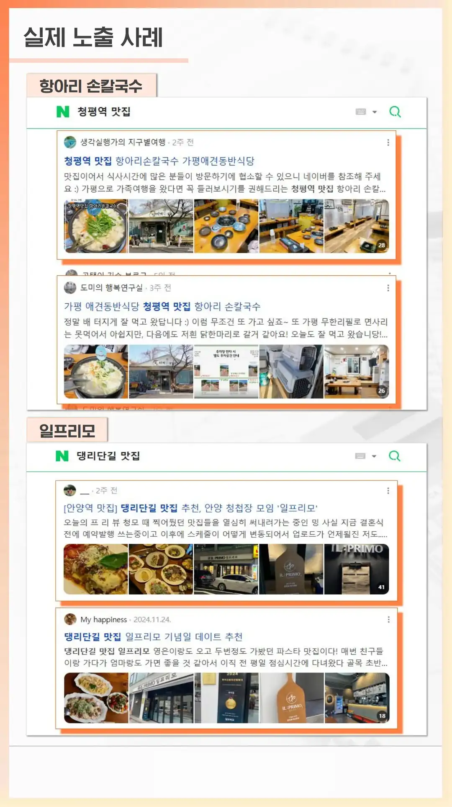
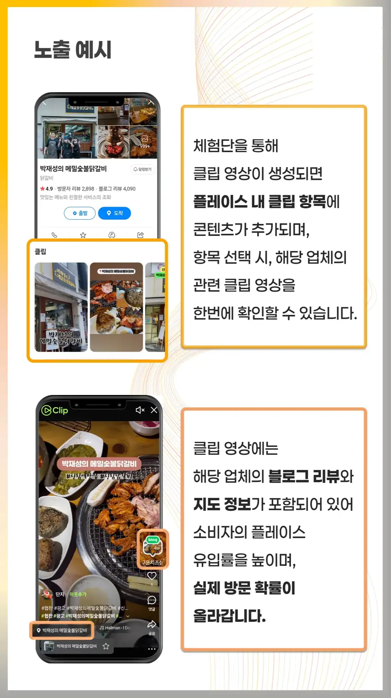

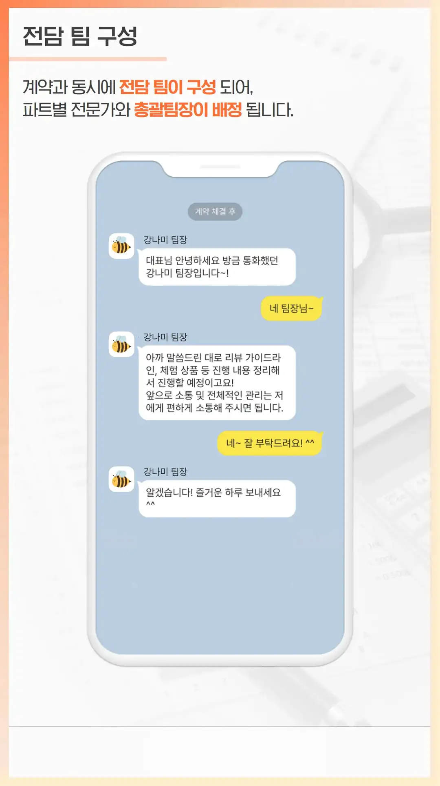


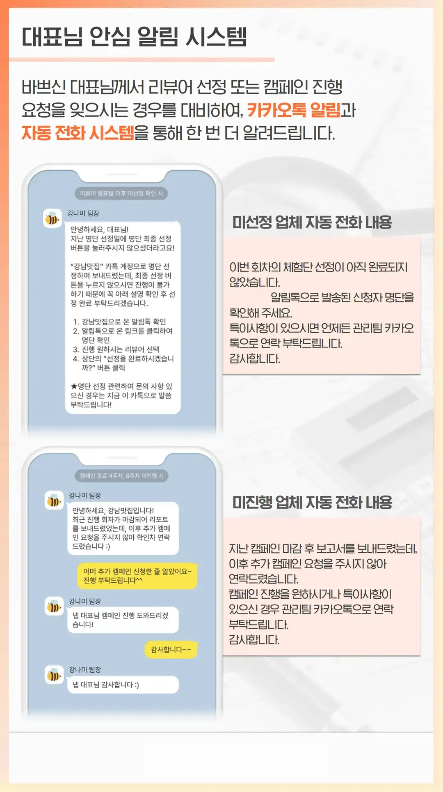
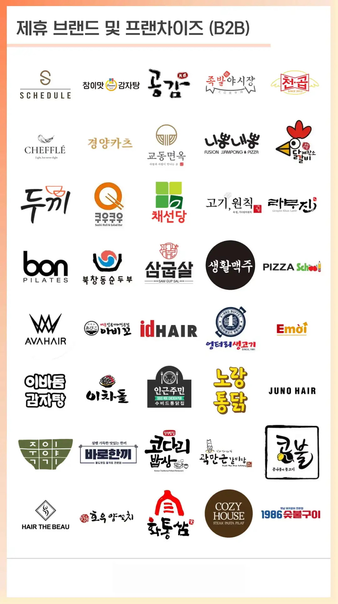

사노동 맛집 플레이스 마케팅
사노동 맛집 플레이스 마케팅 찾는 이유 식당은 물론이고 뷰티 샵이나 공부방처럼 경쟁이 치열한 곳은 남들과 다른 한 끗 차이가 생존을 결정해요. 단순히 맛이 좋거나 서비스가 친절하다는 것만으로는 부족한 세상이거든요. 이런 고민 끝에 인스타그램 비즈니스 계정을 야심 차게 만들지만, 바쁜 일상에 치여 1년 넘게 방치하는 사장님들이 정말 많아요. 사진 몇 장 올리고 끝나는 게 마케팅인 줄 알았는데, 막상 해보니 반응은 없고 시간만 잡아먹는 상황이 반복되죠. 이때부터 전문 업체를 찾게 돼요. 검색창에 가게 이름을 쳤을 때 깔끔하게 정리된 플레이스와 정성스러운 리뷰가 나오는 곳은 손님들에게 신뢰감을 줘요. 반대로 정보가 없거나 낡은 사진뿐인 가게는 첫인상부터 점수를 깎아먹고 시작하는 셈이에요. 잘 관리된 리뷰 하나가 매출로 직결되는 이유는 손님들이 방문 전 반드시 검증 과정을 거치기 때문이에요. 남들이 남긴 긍정적인 경험을 보며 자신의 선택이 틀리지 않았음을 확인받고 싶은 심리죠. 이런 흐름을 파악하고 전략적으로 접근해야 손님의 발길을 잡을 수 있어요.
상권 특성과 방향
상권마다 고객의 움직임이 다르니 그에 맞는 전략을 짜는 게 중요해요. 도시 숲이나 산책로 근처라면 힐링을 찾는 방문객이 많으니 인스타그램 감성 사진과 블로그를 통해 여유로운 분위기를 강조하는 마케팅이 효과적이죠. 반면 오래된 원도심 지역은 젊은 예술가나 감성적인 소비자가 많이 모여요. 이들에게는 숨겨진 맛집이나 독특한 공간이라는 점을 부각하는 스토리텔링이 필수예요. 주거 밀집 지역 사장님이라면 네이버 플레이스 순위와 지역 주민들의 솔직한 리뷰 관리에 집중하세요. 동네 카페나 식당은 재방문이 생명이니까요. 오피스 상권은 완전히 다른 전략이 필요해요. 점심시간 직전인 오전 11시 전후로 노출이 극대화되도록 검색 광고를 세팅하고, 직장인들의 빠른 결정에 도움을 주는 메뉴판 정보와 빠른 예약 기능을 강조해야 하죠. 이렇게 지역 특성과 고객의 소비 시간대를 연결하면 훨씬 효율적으로 광고비를 쓸 수 있어요. 내 가게가 위치한 곳의 고객이 누구인지, 그들이 무엇을 기대하고 방문하는지부터 고민해 보세요.
대표님이 주의할점
많은 사장님이 업체를 믿고 맡겼다가 실망하는 경우가 생각보다 많아요. 계약을 맺고 나니 매달 서비스 만족도를 묻기는커녕 연락조차 잘 안 되는 업체가 허다하거든요. 심지어 블로그 후기를 맡겼는데 다른 지역의 전혀 다른 가게를 홍보했던 내용을 그대로 복사해서 올리는 황당한 실수까지 겪기도 해요. 이런 곳들은 마케팅의 기본인 우리 매장만의 색깔을 전혀 이해하지 못한 채 공장처럼 결과물만 찍어내요. 좋은 업체를 찾으려면 반드시 최근 진행했던 레퍼런스를 꼼꼼히 확인해야 해요. 해당 업체의 블로그나 SNS 포트폴리오를 보고 우리 가게와 비슷한 업종을 성공시킨 사례가 있는지 체크하세요. 또한 계약서에 매달 성과를 분석한 리포트를 제공하는지, 수정 요청은 몇 회까지 가능한지 명확히 기재하는 것이 좋아요. 무조건 저렴한 가격만 내세우는 곳보다는 우리 매장의 장점을 어떻게 스토리텔링할지 고민하는 업체와 손을 잡아야 돈 낭비를 줄일 수 있어요. 상담할 때 사장님의 의견을 경청하는지 확인하는 것만으로도 나쁜 업체를 걸러내는 데 큰 도움이 돼요.
사노동 맛집 플레이스 마케팅 비용
사노동 맛집 플레이스 마케팅 비용은 당장 수중에 쓸 수 있는 여유 자금이 넉넉하지 않다면 돈을 들이지 않고 사장님 손으로 직접 네이버 스마트플레이스 정보를 꼼꼼하게 채워 넣는 것부터 시작하는 게 현명해요. 매주 메뉴 사진을 바꾸고 손님들이 남긴 리뷰에 정성스럽게 답글을 달아주는 기본적인 작업만으로도 포털 사이트 알고리즘은 우리 가게를 긍정적으로 평가하거든요. 어느 정도 여유가 생겨서 전문 대행사의 도움을 받으려고 알아보면 월 수십만 원부터 백만 원이 넘는 금액까지 폭이 아주 넓어서 혼란스러울 수 있어요. 처음 시작하는 단계라면 너무 무리한 금액을 쓰기보다 우리 가게의 한 달 순이익에서 감당할 수 있는 수준인 삼십만 원에서 오십만 원 선으로 예산을 잡고 시작하는 게 부담을 줄이는 방법이에요. 무조건 비싼 상품이 좋다고 믿기보다는 현재 우리 가게 매출 규모와 비교해서 비용 대비 실제로 몇 명의 손님이 더 찾아왔는지 분석하고 다음 달 계획을 수정해 나가는 태도가 중요해요.
자주 하는 실수
마케팅을 처음 시작하는 사장님들이 가장 흔하게 저지르는 실수는 일주일에 한 번꼴로 할인 행사나 서비스 메뉴를 바꾸는 행동이에요. 손님들은 우리 가게의 시그니처가 무엇인지 기억하기도 전에 자꾸 바뀌는 혜택 때문에 오히려 혼란을 느끼고 발길을 돌리게 되거든요. 또 다른 치명적인 실수는 남들이 하니까 무작정 따라 하느라 가게만의 고유한 이야기나 사장님의 요리 철학이 전혀 담기지 않은 밋밋한 홍보물을 올리는 일이에요. 검색을 통해 들어온 손님들의 마음을 사로잡는 것은 화려한 기교가 아니라 이 가게가 왜 이 메뉴에 진심인지 보여주는 진솔한 한 줄의 메시지예요. 오늘 당장 이벤트 내용을 수시로 바꾸는 버릇을 멈추고, 우리 가게가 가장 자신 있는 메뉴의 탄생 배경이나 손님을 대하는 진심을 글과 사진으로 차분히 녹여내 보세요.
직접 하는 것과 맡기는 것의 차이
사노동 맛집 플레이스 마케팅는 가게 문을 닫고 밤마다 블로그를 쓰고 숏폼 편집을 하려니 몸이 열 개라도 모자라죠. 전문 마케팅 업체는 단순히 글을 올려주는 것을 넘어 광고 노출, 클릭, 전화 문의, 실제 방문까지 이어지는 전체 퍼널을 설계하고 각 단계를 세밀하게 최적화해요. 혼자서 하면 알고리즘 변화를 따라잡기 버겁지만, 대행사에 맡기면 우리 브랜드가 손님들의 머릿속에 확실히 각인되도록 노출 빈도를 꾸준히 관리할 수 있어요. 그렇다면 무조건 맡기는 게 정답일까요. 하루 매출이 적고 아직 손수 손님을 응대하며 매장 시스템을 다듬는 단계라면 굳이 돈을 들여 업체를 쓸 필요는 없어요. 스마트폰으로 직접 사진을 찍고 일상을 올리면서 감을 익히는 것이 먼저예요. 하지만 매장 운영으로 눈코 뜰 새 없이 바쁘고 마케팅에 쓸 시간이 전혀 없다면, 그때는 전문 업체의 도움을 받아 시간과 에너지를 아끼는 것이 훨씬 현명한 선택이에요.
자주 묻는 질문
마케팅 시작 전에 준비할 게 있나요
스마트플레이스에 등록된 영업시간, 메뉴 사진, 가격 정보가 실제 매장과 정확히 일치하는지 먼저 점검해야 해요. 광고를 보고 찾아온 손님이 헛걸음하거나 정보가 다르면 바로 이탈하기 때문이에요.
효과가 나타나기까지 얼마나 걸리나요
블로그나 플레이스 상위 노출 작업은 보통 두 달에서 세 달 정도의 시간이 필요해요. 단기간에 폭발적인 효과를 기대하기보다는 꾸준히 데이터가 쌓이면서 방문자가 늘어나는 구조를 만들어야 해요.
작은 가게도 마케팅 업체를 써야 하나요
예산이 부족한 소규모 매장이라면 처음부터 큰돈을 쓰기보다 사장님이 직접 스마트폰으로 매장 일상을 올리며 기본기를 다지는 것이 좋아요. 여유 자금이 생기고 혼자서 관리하기 벅찰 때 대행사를 고민해도 늦지 않아요.
업체를 쓰다가 중간에 그만두면 어떻게 되나요
대행사와의 계약을 중도 해지할 때는 그동안 작성된 블로그 포스팅이나 플레이스 세팅 권한이 어떻게 처리되는지 계약서에 명시되어 있어야 해요. 잘못하면 지금까지 쓴 비용이 한순간에 사라질 수 있어요.
어뷰징이나 저품질 걱정은 없나요
비정상적인 프로그램을 써서 순위를 올리는 업체를 만나면 네이버로부터 플레이스나 블로그가 검색 차단되는 저품질 제재를 당할 수 있어요. 지나치게 싼 가격을 내세우는 곳은 피하고 작업 방식을 투명하게 공유하는 곳을 골라야 해요.